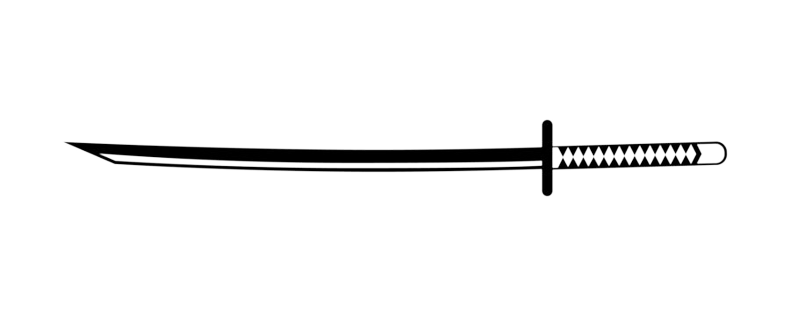

- Février 1991: 1ère apparition de Deadpool dans le comics "the new mutants" #98
- 2009: 1ère apparition au cinéma dans la série de film les X-men, figurant dans "les X-men Origins: Wolverine"
- 2016: propre adaptation sur grand écran avec "Deadpool" interprété par Ryan Renolds
- 2018: la suite "Deadpool 2"
